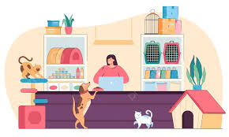

BIENVENIDOS A NUESTRA TINEDA DE MASCOTAS(Paws & Claws)
info:
Hola bienvenido a nuestra tienda de mascotas, en esta tienda tenemos variedades de animales domesticos q esperan
tenerun hogar, la tinda esta ubicada en independencia AV.los pinos
bucanos como (Paws & Claws) en las redes
Para la compra de su mascot puede revisar la lista que tenemos

historia sobre uno de nuestras animalito recien llegados
"El vagabundo de la calle 14"
Durante años, un perro mestizo de pelaje enmarañado y mirada cansada vagó por la calle 14 de una ciudad bulliciosa. Nadie sabía exactamente cómo había llegado allí. Algunos decían que lo habían abandonado cuando era solo un cachorro. Otros pensaban que simplemente se había perdido y su familia nunca lo buscó. Lo cierto era que lo conocían como Sombra, porque se movía silenciosamente entre las sombras, evitando a los humanos y refugiándose bajo autos, en portales o detrás de los basureros.
Sombra sobrevivía con sobras, lluvia y frío. Tenía una cicatriz en la oreja izquierda y una leve cojera en la pata trasera. Cuando pasaban niños, se escondía. Cuando algún alma caritativa le ofrecía comida, la tomaba sin levantar la mirada, siempre listo para huir.
Pero una tarde de invierno, cuando el viento parecía cuchillas y la lluvia no cesaba, Sombra se acurrucó en el mismo rincón que siempre —el portal de una librería vieja. Esa noche, sin embargo, la puerta se abrió. Una mujer mayor, de cabello blanco y bufanda roja, se agachó frente a él. No habló. Solo le dejó una manta seca y un cuenco con caldo caliente.
Volvió al día siguiente. Y al siguiente. Y así, poco a poco, Sombra empezó a esperarla. Tardó semanas en dejarse tocar, y aún más en seguirla hasta el interior de la librería. Pero lo hizo. Y cuando por fin se dejó acariciar detrás de las orejas, algo en sus ojos rotos empezó a repararse.
La mujer se llamaba Clara. Vivía sola desde hacía años, pero decía que los libros y las historias le hacían compañía. Adoptó a Sombra sin collar, sin papeles y sin pasado. Lo rebautizó como Tom, como el personaje aventurero de sus cuentos favoritos. Lo llevó al veterinario, lo bañó, y con el tiempo, Tom dejó de cojear. Empezó a dormir sobre una manta tibia junto a la estufa, a mover la cola cuando sonaba la campanilla de la puerta, y a esperar a Clara cada vez que se alejaba, aunque fuera solo para preparar té.
Los vecinos se acostumbraron a ver al perro del escaparate de la librería, dormitando entre libros, con la cabeza apoyada en una pila de novelas. Y Tom… Tom aprendió que no todos los humanos asustan. Que el calor de un hogar, aunque llegue tarde, siempre es bienvenido. Que hay heridas que se curan con tiempo, pan, y amor.
Y que a veces, la mejor historia… es la tuya.
visita nuestra pagina de adopcion